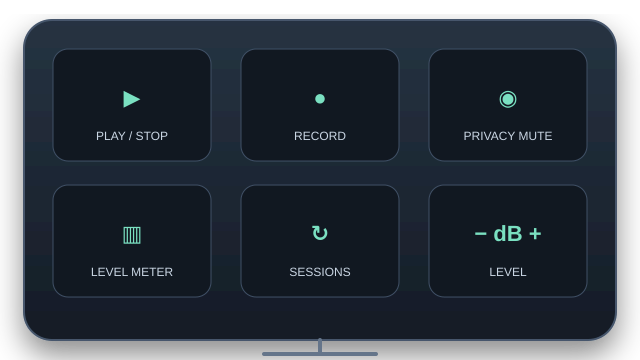
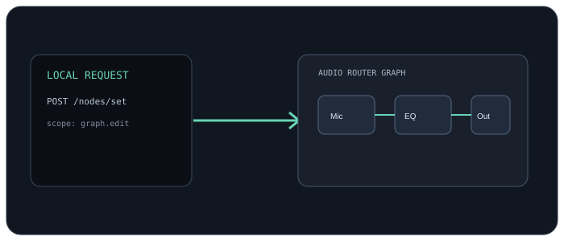

◉
Toggle a tool
Enable or bypass any tool, or toggle a supported two-choice setting. Use a press-to-toggle key, or hold for a momentary change such as push-to-talk or quick A/B plugin checks.
AudioRouter’s Stream Deck integration puts the controls you already use on dedicated keys. Start Stream Deck and use AudioRouter actions to manage playback, sessions, recording, tool states, microphone privacy, and live levels.

Keys follow the selected AudioRouter session by default, so your deck stays in step with the session open in the app.
Enable or bypass any tool, or toggle a supported two-choice setting. Use a press-to-toggle key, or hold for a momentary change such as push-to-talk or quick A/B plugin checks.
Keep a level meter on the deck. See the selected node’s signal while you play; live polling runs only while a meter key is visible.
Toggle the AudioRouter microphone privacy mute from a dedicated key. Its state is reflected on the key so you can see when capture is muted.
Start or stop the selected session without switching away from the game, call, or recording application.
Show available sessions on a key, then select the setup you want. Change sessions while the deck stays open.
Start or stop a selected Recorder node. The session must be playing; recordings go to the folder already configured in AudioRouter.
Raise or lower a Volume, Gain, or Mixer input in controlled increments and see its current value on the key.
The Stream Deck plugin comes with the AudioRouter installer (0.0.14 and later). Install it once and its AudioRouter actions appear in Stream Deck’s actions list; drag the ones you want onto keys. No scripts, cloud account, or separate routing service.
After setup, Stream Deck reconnects to the local API whenever both apps are running. Audio and control stay on this PC.
Use a play key, a session key, a privacy-mute key, a live game meter, and a toggle for a VST or EQ. Give keys your own titles and images in Stream Deck. Each action’s settings offer choices from the AudioRouter session.
The plugin talks to AudioRouter’s loopback HTTP API and uses the same local permissions as other API clients. It does not upload audio or send control traffic to a cloud service.
